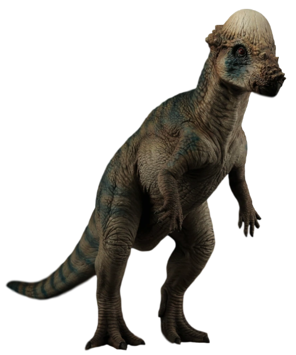
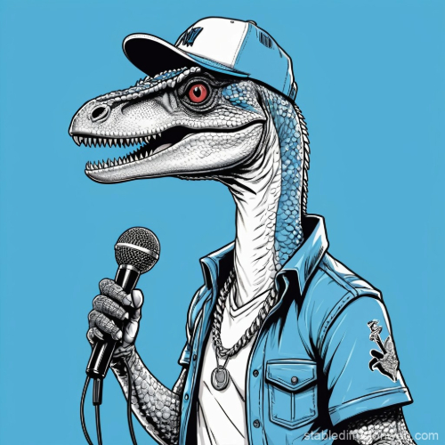

As we all know, dinosaurs went extinct about 66 million years ago. The true shame in this is not the catastrophic loss of life that came with changing climate and natural disasters, but the fact that we will never know if a t-rex could shred a mean line on guitar. However, we can still wonder, and in this assignment, I will be asking the age old question: "if dinosaur's could make a band, what instrument would each play?". My answer will be determined by the following three points.
To get the obvious answer out of the way, a t-rex would be the guitarist. While the anatomy of his smaller hands does decrease his cool factor, as he would need the guitar to be higher up on his body (not cool), it is undeniable that the evidence provided by VMStudiosOfficial in this video recreation proves that t-rexs have guitarist vibes. The anatomy of the Pachycephalosaurus, on the other hand, makes it clear that they were destined to be drummers; as their hobbies already include hitting things (as seen by their boney heads. see image below). Our top researches struggled greatly to determine who the bassist was, but once provided video evidence by Bradley Keda that not only would triceratops' anatomy work perfectly as a bassist, not only do they look super cool as a bassist, but their vibes are unquestionably bassist, there was a unanimous agreement that triceratops would play bass. Last, but not least, the velociraptor would be the vocalist. This is decision is made from both anatomical and vibe-ical arguments; as velociraptors are the smallest of the four, and would have a napoleonic complex, dirving them towards the center of attention

| Dinosaur | Band Role |
|---|---|
| Velociraptor | Vocalist |
| T-rex | Guitarist |
| Triceratops | Bassist |
| Pachycephalosaurus | Drummer |
